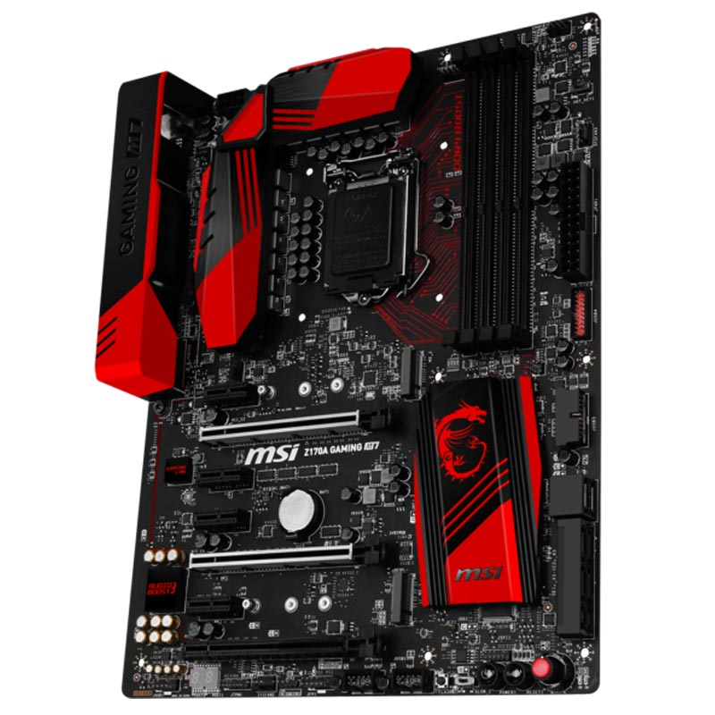

ASUS H170-PLUS D3 LGA 1151/DDR3
 Detalles
Detalles
- 5X Protection II: Protección hardware avanzada
- Compatibilidad con módulos DDR3/DDR3L
- M.2 ultrarrápido con interfaz PCIe® 3.0 x4
- Épico sonido gaming con iluminación LED
- Reconocida UEFI BIOS con EZ Flash 3
- DIY PC fácil con un diseño para una instalación segura de la placa
- Fan Xpert 2+: Controles avanzados para una refrigeración eficiente y silenciosa

ASUS - Rog Strix H270F Gaming
Detalles
-El sucesor de nuestras Tarjetas Madre Pro
Gaming
-La tecnología de iluminación Aura
Sync RGB LED para lo último
en personalización
-Amigable con diseños de impresión 3D — Las
piezas dedicadas imprimibles en 3D se
ajustan facilmente
-Audio ROG SupremeFX — Rendimiento de audio renovado
con dos amplificadores de audífonos, Sonic Studio III
mejorado, y Sonic Radar III
Red para Juegos
— La mejor Intel® Gigabit Ethernet, LANGuard,
y tecnología GameFirst
-Conectividad de siguiente generación
— Dos slots M.2 incluídos para un ancho
de banda de hasta 32Gbps PCIe y conector
USB 3.1 Tipo-C
ASUS SafeSlot con patente pendiente
para mejor retención PCIe y resistencia a la compartición

ASUS H170 PRO GAMING/1151/DDR4
Detalles
Socket LGA1151 para la sexta generación
Intel® Core ™ i7 / Core i5 / Core i3, Pentium® y Celeron procesadores
Dual DDR4 2133 ayuda
SupremeFX: audio impecable que hace
que parte del juego
De Sonic Radar ll:
Analizar y detectar a sus enemigos a
dominar
Intel Gigabit Ethernet, LANguard
y GameFirst III: Top velocidad protegid
a redes
RAMCache: acelerar su carga el juego
Guardián de Gamer: componentes altamente
duraderos y características inteligentes
de bricolaje
ASUS SABERTOOTH Z170
Detalles
PCB con un patrón de camuflaje ártico digital
e indicadores Q-LED blancos
USB 3.1 integrado: un puerto Tipo
A y otro Tipo C reversible
TUF Detective 2: Información del
sistema al alcance de tus manos
TUF ICe y Thermal Radar 2: Sistema
de refrigeración integral
TUF Components: TUF 10K Ti-Caps, TUF Alloy
Chokes y MOSFET con certificación milita
B250M GAMING PRO
Detalles
Supports 7th / 6th Gen Intel® Core™ / Pentium® / Celeron® processors for LGA 1151 socket
Supports DDR4-2400 Memory (Max.)
DS B1 GAMING Mouse B
DDR4 Boost: Give your DDR4 memory a
performance boost
VR Ready: Best virtual
reality game experience without
latency
Lightning Fast Game experience:
Turbo M.2, Intel Optane Memory Ready
Audio Boost: Reward your ears
with studio grade sound quality for
the most immersive gaming experience
ASUS Z170 PRO GAMING/1151/DDR4
Detalles
Disfruta de múltiples configuraciones con la
placa base Asus Z170 Pro Gaming, una de las
placas base de Asus orientadas
al usuario gamer.
La motherboard es compatible con
socket 1151 para la sexta generación de
procesadores Intel
Core i7 e i5 fabricados en 14 y
22 nanómetros y soporta la tecnología Intel
Turbo Boost Technology 2.0.